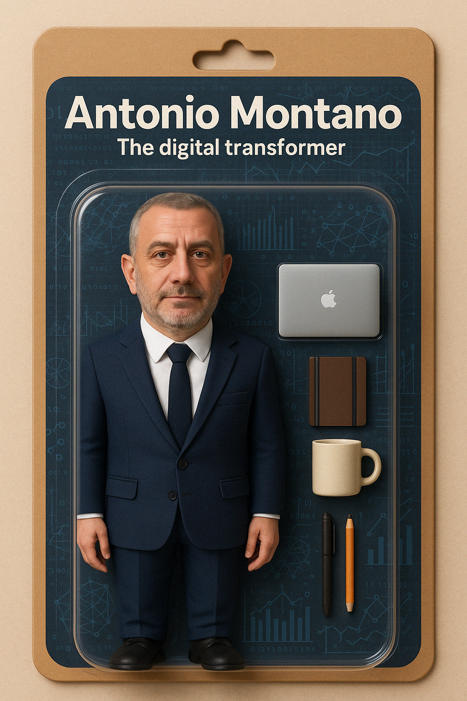

Prologue
We are living through one of the most exhilarating moments in the history of technology. Every day, breakthroughs in machine learning, data pipelines, automation, and edge computing redefine the boundaries of what’s possible.
For me, being an interim manager in this landscape is not just a job, it’s a creative calling, a unique opportunity to shape the future of how businesses operate, grow, and thrive.
I don’t just help companies “go digital.” I help them reimagine what they can become. My work is about turning vision into architecture, uncertainty into opportunity, and potential into working systems. I bring together strategy and execution, architecture and operations, culture and code.
And in this era, where AI reshapes every domain it touches, I see my role as both builder and guide—someone who can sketch the future at the enterprise level and then lead the team that gets us there, step by step, sprint by sprint.
From architecture to transformation
Enterprise architecture is often misunderstood as a governance-heavy discipline, focused on documentation and frameworks. For me, architecture is a compass for transformation.
It’s the lens that connects vision to execution, ensuring that every decision—from data models to ERP rollout, from cloud adoption to cybersecurity posture—aligns with strategic intent.
Over the years, I’ve blended TOGAF, ArchiMate, design thinking, Agile, and DevOps into what I call adaptive architecture: a practical way to drive clarity and momentum without drowning in methodology.
Architecture, for me, is not just about artifacts. It’s about narratives that create alignment.
It’s not just about current and target states. It’s about roadmaps that organizations can walk, even in uncertainty.
It’s not just governance. It’s transformation scaffolding, holding complexity in place until change becomes natural.
Technology as a strategic multiplier
I see technology as more than tools, it’s the force multiplier of strategy. My strength lies in helping organizations harness the chaos of technological change and channel it into measurable impact.
AI and machine learning: beyond automation
Machine learning is not just about automating tasks—it’s about enabling adaptive enterprises.
I’ve built ML pipelines that act as 24-hour workforces: anomaly detection in industrial plants, real-time bid optimization in energy trading, predictive maintenance in manufacturing.
These systems don’t just save costs; they reshape operating models, freeing humans to focus on creativity and strategy.
ERP as orchestration engines
Modern ERPs are no longer digital ledgers. When designed properly, they become collaboration engines.
I’ve led ERP transformations where Dynamics 365 F&O became the central orchestrator of value streams: integrating APS scheduling, MES shop-floor execution, and CRM-driven sales planning.
The result wasn’t “process automation”, it was an organization with a shared nervous system, making decisions with speed and confidence.
Cybersecurity as enterprise trust
In sectors under NIS2, IEC 62443, and ISO 27001, I reframed compliance as an opportunity: embedding secure-by-design architectures that made cybersecurity a competitive advantage.
In energy storage and water treatment, we turned regulatory burden into a roadmap for resilience, trust, and operational excellence.
Cloud-native, elastic by design
In fintech and edtech, I architected cloud-native platforms using serverless patterns, event buses, and CI/CD automation.
The impact wasn’t only cost efficiency, it was the ability to pivot in days, to launch features in sync with market signals. Technology became the engine of business agility.
M&A as a catalyst
In post-acquisition settings, I’ve guided carve-outs and integrations by mapping application portfolios, capability models, and data flows.
What could have been disruptive transitions became opportunities to simplify landscapes, modernize architectures, and establish shared digital foundations.
Frameworks and meta-methods
What makes transformation sustainable isn’t inspiration alone—it’s method, adapted to context.
Over the years, I’ve built a meta-toolkit of frameworks that I adjust to each environment:
TOGAF & ArchiMate: Capability mapping, target operating models, application landscapes. Not bureaucracy, but decision support tools.
Agile & DevOps: Blending architecture runway with squad delivery models. Agility without losing governance.
ITIL & service design: Stability and resilience baked into change. Crucial for utilities, finance, and regulated industries.
Design thinking & co-creation: Co-design with executives, developers, and front-line staff to guarantee adoption.
Zero Trust & secure-by-design: Cybersecurity as a native layer of architecture, not an afterthought.
I don’t impose dogma, I bring architectural scaffolding that allows organizations to accelerate safely.
Case narratives: transformation in action
Energy & Utilities: Designed OT/IT convergence architectures for battery storage plants, embedding IEC 62443 compliance, segmented networks, and secure SCADA/ERP integration. Result: regulatory approval and operational trust.
Manufacturing: Implemented an ERP + APS + MES stack across multiple sites, enabling variant-driven product masters, real-time scheduling, and intercompany flows. Result: a global supply chain that shifted from reactive to predictive.
Finance: Delivered cloud-native, API-first platforms for real-time risk monitoring and fraud detection, integrating AI models directly into transaction pipelines. Result: reduced fraud, increased trust.
Education: Built scalable edtech platforms using serverless technologies, capable of handling sudden surges in usage (COVID-era). Result: continuity, growth, and user trust at scale.
M&A: Guided IT carve-outs and integrations, using architecture to clarify “what to keep, what to shed, what to transform.” Result: accelerated stabilization post-deal and smoother cultural alignment.
The human side of architecture
Technology only succeeds when people believe in it.
I enter organizations expecting skepticism, resistance, even fear. These are natural responses to disruption. My role is to translate ambiguity into clarity, to connect emotionally as well as technically.
I listen actively, sensing emotional undercurrents.
I adapt communication across the boardroom and the shop floor.
I lead with empathy, because trust is the only bridge to adoption.
The invisible work of transformation is this: helping people move from fear to agency, from inertia to momentum.
Why interim management
Why step into pressure-cooker environments, where expectations are high and time is short? Because this is where architecture matters most.
In moments of urgency—M&A, crisis recovery, regulatory deadlines—organizations don’t need theory. They need someone who can blend frameworks with pragmatism, who can architect change under pressure.
That’s what I thrive on: delivering clarity, embedding resilience, and leaving behind not only systems, but capabilities that endure after I exit.
Toward enterprise orchestration
Looking forward, I see enterprises evolving into continuous orchestration systems.
ERPs as headless orchestrators, feeding APIs and intelligent agents.
AI models embedded as first-class enterprise actors.
Cybersecurity frameworks as trust backbones, enabling resilient ecosystems.
Human roles shifting toward stewardship of value streams, supported by digital agents.
This is where I position my work: at the frontier where architecture, leadership, and emerging technology converge.
A call to the bold
If you’re a CEO wondering how to navigate the explosion of digital paradigms, or a headhunter searching for someone who blends strategic clarity with deep technical execution, let’s talk.
I thrive in complexity. I build systems and organizations that scale, adapt, and inspire.
The future isn’t waiting. Let’s architect it together.